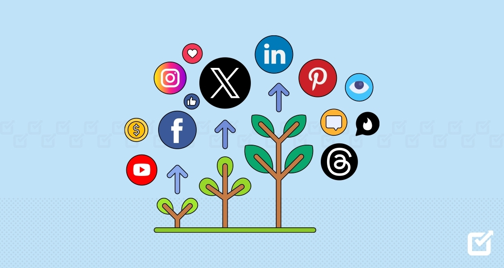

Projects
Social media growth and analytics ideas
Social Media Platform Comparison
This project compares TikTok, Instagram, and YouTube as growth platforms. It focuses on how creators and brands use each platform differently for short-form video, community building, engagement, and monetization.
View Scratch Page
Tableau Social Media Dashboard
This project uses a live Tableau dashboard to show how social media trends can help explain follower growth over time. It connects platform activity, trend analysis, and audience growth into one visual dashboard.
View Tableau Graph